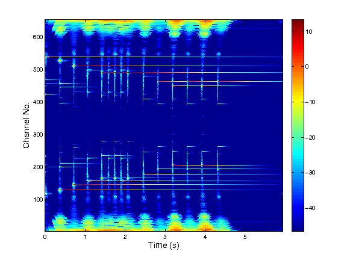

[c,Ls,g,shift,M] = cqt(f,fmin,fmax,bins,fs,M) [c,Ls,g,shift,M] = cqt(f,fmin,fmax,bins,fs) [c,Ls,g,shift] = cqt(...) [c,Ls] = cqt(...) c = cqt(...)
| f | The signal to be analyzed (For multichannel signals, input should be a matrix which each column storing a channel of the signal). |
| fmin | Minimum frequency (in Hz) |
| fmax | Maximum frequency (in Hz) |
| bins | Vector consisting of the number of bins per octave |
| fs | Sampling rate (in Hz) |
| M | Number of time channels (optional) If M is constant, the output is converted to a matrix |
| c | Transform coefficients (matrix or cell array) |
| Ls | Original signal length (in samples) |
| g | Cell array of Fourier transforms of the analysis windows |
| shift | Vector of frequency shifts |
| M | Number of time channels |
This function computes a constant-Q transform via non-stationary Gabor filterbanks. Given the signal f, the constant-Q parameters fmin, fmax and bins, as well as the sampling rate fs of f, the corresponding constant-Q coefficients c are given as output. For reconstruction, the length of f and the filterbank parameters can be returned also.
The transform produces phase-locked coefficients in the sense that each filter is considered to be centered at 0 and the signal itself is modulated accordingly.
Optional input arguments arguments can be supplied like this:
cqt(f,fmin,fmax,bins,fs,'min_win',min_win)
The arguments must be character strings followed by an argument:
| 'min_win',min_win | Minimum admissible window length (in samples) |
| 'Qvar',Qvar | Bandwidth variation factor |
| 'M_fac',M_fac | Number of time channels are rounded to multiples of this |
| 'winfun',winfun | Filter prototype (see firwin for available filters) |
| 'fractional' | Allow fractional shifts and bandwidths |
The following example shows analysis and synthesis with cqt and icqt:
[f,fs] = gspi; fmin = 200; fmax = fs/2; [c,Ls,g,shift,M] = cqt(f,fmin,fmax,48,fs); fr = icqt(c,g,shift,Ls); rel_err = norm(f-fr)/norm(f); plotfilterbank(c,Ls./M,[],fs,'dynrange',60);
N. Holighaus, M. Dörfler, G. A. Velasco, and T. Grill. A framework for invertible, real-time constant-Q transforms. IEEE Transactions on Audio, Speech and Language Processing, 21(4):775 --785, 2013.
G. A. Velasco, N. Holighaus, M. Dörfler, and T. Grill. Constructing an invertible constant-Q transform with non-stationary Gabor frames. Proceedings of DAFX11, 2011.